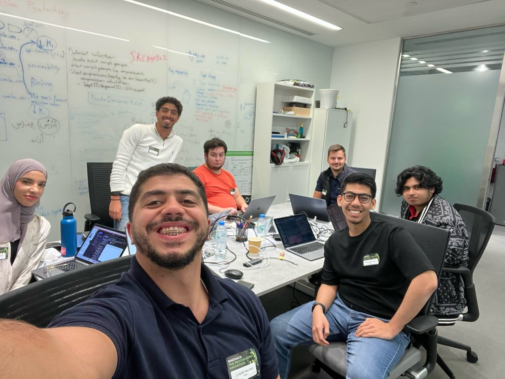

Last week, a professor shared something that stuck with me: "The more you know, the more you know that you don't know." We were chatting about academia and life, and honestly, when I first heard it, I wasn't entirely sure what he meant. But then came last Saturday, and suddenly it all clicked.
I had the incredible opportunity to participate in BindHack at Insilico Medicine in Masdar City, a #drugdiscovery-meets-#AI hackathon that turned out to be one of the most collaborative and exciting experiences I've had in a while.
The Challenge: Team up and PREDICT!
Picture this: just six hours to build a model that predicts how well antibodies bind to antigens using their sequences and structures... Six hours!

Our team lead during the initial planning phase
Where I Thought I Could Do It On My Own
During the initial briefing, I found myself thinking: "Okay, I need to win. I must win. I've been doing this for a while, how hard could it be?" My competitive side took over, and I was ready to tackle this challenge head-on.
But then we formed teams, and everything changed. I saw how experienced my teammates were. Some of them coded for a living! That's when I realized: maybe you don't need to figure everything out on your own. Maybe the real power lies in splitting up the work and leveraging everyone's strengths.
Our team (Syafiq Kamarul Azman, Youssof Saleh, Noel Thomas, Shamma, and Aleks) brought such unique perspectives and skills to the table that we quickly found our rhythm.

Moments of laughter kept the energy positive even as the clock was ticking down
Our strategy was straightforward but effective: talk ideas out, split into pairs, distribute the work, deliver what you can, and see what performs best. No egos, just pure collaboration. And guess what? By focusing on choosing the right data and finding better feature representations... we walked away with 1st place! 🏆 Massive kudos to everyone on Team 1!!

The winning moment! our first place victory at BindHack
Now I Know What That Quote Meant
Looking back, that professor's quote hits differently now. I saw how much I still have to learn about AI, about protein science, and most importantly, about the power of collaboration. Instead of fixating on finishing everything alone, I learned to embrace teamwork.
This experience stands as one of the best examples of how teamwork elevates academic research. The more I dove into the problem, the more I realized how much I didn't know, and that wasn't discouraging, it was exciting. This has become my new motto
That's the beauty of initiatives like this hackathon. They remind you that learning isn't about having all the answers, but about being curious enough to ask the right questions and humble enough to learn from others.

The entire BindHack community - all teams together after an intense but rewarding day
I'm incredibly glad I took part in this experience, and I'm looking forward to many more, inshallah!
Tremendous appreciation to Insilico Medicine for the fantastic organization and warm hospitality, and a special thanks to their team for the guidance, spirit, and good vibes throughout the day.
Here's to embracing what we don't know, and having fun discovering it together... Teamwork fits perfectly in the research world.